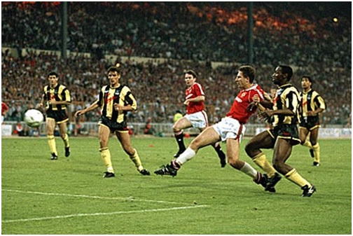

Chương 25

háng 1, 1990, dư luận râm ran tin đồn: Nếu Manchester United thất bại trước Nottingham Forest ở vòng ba Cúp FA, Alex Ferguson sẽ bị sa thải. Phong độ giải VĐQG rất phập phù, Quỷ Đỏ coi như không còn hy vọng vô địch, nên thua Forest đồng nghĩa với một mùa trắng tay. Ron lớn giành hai cúp còn phải ra đi, không lý gì dung túng một HLV bốn năm trời không danh hiệu!
Khả năng United bị loại khá cao, bởi dưới quyền Brian Clough, Forest nổi danh chuyên gia đá cúp. Thêm vào đó, họ có lợi thế sân nhà, trong khi đội bóng của Ferguson thiếu vắng Robson, Ince và Sharpe do chấn thương. Trước trận đấu, bình luận viên Jimmy Hill phán một câu xanh rờn: Nhìn United khởi động là đã thấy thua! Hill không ngờ sau tiếng còi khai cuộc, đội dưới cơ lại là Forest. Với lối đá mạnh mẽ, tự tin, Quỷ Đỏ đẩy đối phương vào thế phòng ngự co cụm. Phút 57, Lee Martin đoạt bóng trong chân hậu vệ Forest, chuyền ngang đến chân Hughes; Hughes phất bóng điệu nghệ vào vòng cấm, tạo cơ hội cho Mark Robins đánh đầu ghi bàn duy nhất. Bàn thắng này minh chứng cho sức mạnh từ chính sách “cây nhà lá vườn” tại Old Trafford: Robins và Martin là hai “nhi đồng Fergie”, tuổi mới 21-22, còn Mark Hughes cũng trưởng thành từ đội trẻ.
Có thật bàn thắng của Robins đã cứu vãn sự nghiệp Alex Ferguson? Martin Edwards phủ nhận điều đó. Theo Edwards, ông không hề ra tối hậu thư, mà còn trấn an HLV trưởng: “Cứ yên tâm, dù kết quả thế nào, anh vẫn an toàn”. Bobby Charlton cũng khẳng định BLĐ chưa bao giờ bàn đến việc thay ngựa giữa dòng. “Không, không ai đưa vấn đề ấy ra cả”, Charlton quả quyết, “Chúng tôi đều biết Ferguson đang đưa đội đi đúng hướng”.
Vượt qua Forest, United lần lượt đả bại Hereford, Newcastle và Oldham, giành quyền vào chung kết gặp Crystal Palace, CLB được dẫn dắt bởi cựu quỷ đỏ Steve Coppell. Chiếm ưu thế, nhưng đội thành Man để Palace cầm hòa 3-3 sau 120 phút đầy kịch tích. Hai trong số ba bàn của Palace đến từ những sai lầm thô thiển của thủ môn Jim Leighton.
Nhìn Leighton ủ rũ sau trận đấu, Ferguson lắc đầu ngao ngán. Phong độ gần đây đã không được tốt, nay lại phạm phải sai lầm chí mạng, Leighton hoàn toàn đánh mất sự tự tin; nếu để anh tiếp tục bắt chính trong trận tới sẽ là quá mạo hiểm. Song le, Leighton là học trò ruột của Ferguson, đã từng bao năm chinh chiến cùng thầy ở Aberdeen, lẽ nào có thể bỏ rơi anh? Suy tính mãi, Ferguson đành đặt lý trí lên trên tình cảm cá nhân, giành suất đá chính cho thủ môn dự bị Les Sealey. Mới ra sân một lần trong màu áo United, tài năng của Sealey thật sự không bằng Leighton, nhưng anh ta lại cho rằng mình giỏi hơn. Vào thời khắc này, Fergie cần sự tự tin đó[1].
Thực tế chứng minh Ferguson đã đúng. Không phụ lòng thầy tin tưởng, Sealey chơi khá tốt trong trận tái đấu. Trận này, Mark Robins chỉ ngồi dự bị, người lập công là Lee Martin. Phút 59, lúc đang đứng bên phần sân nhà, Martin nghe trợ lý Archie Knox hét: Lao lên. Anh liền tăng tốc tiến vào vòng cấm địa đối phương, vừa kịp lúc nhận đường chuyền từ Neil Webb để dứt điểm tung lưới thủ môn Palace, đem Cúp FA về Old Trafford.
Cuối mùa năm đó, United chỉ đứng hạng mười ba ở giải VĐQG, nhưng Cúp FA tạm làm dịu đi cơn khát; CĐV không hô hào đòi “lấy đầu” Ferguson nữa. Với chính Ferguson, tuy từ ấy đến nay đã có thêm hàng loạt danh hiệu, chiếc cúp đầu tiên luôn để lại ấn tượng khó quên. Fergie không bao giờ quên công Lee Martin. Sau cú ăn ba lịch sử năm 1999, ông đứng ra tổ chức một trận giao hữu giữa Manchester United và Bristol Rovers, CLB Martin đang khoác áo. Bao nhiêu tiền vé thu được đều giành tặng hậu vệ cánh trái này.

Lee Martin ghi bàn vào lưới Crystal Palace, giúp United giành Cúp FA năm 1990 (Ảnh: Unitedrant.co.uk)
Đoạt Cúp FA, United có cơ hội trở lại đấu trường châu Âu, dự Cúp C2 mùa 1990-1991. Đội thắng Pecsi Munkas (Hungary), Wrexham (Wales), trước khi vượt qua hai đội bóng cứng cựa hơn là Montpellier (Pháp) và Legia Warsaw (Ba Lan), trở thành CLB Anh đầu tiên lọt vào chung kết một Cúp Châu Âu kể từ Liverpool năm 1985. Tuy vậy, fan Quỷ Đỏ không ai lạc quan, bởi đón chờ họ tại SVĐ De Kuip, Rotterdam là Barcelona.
So sánh lực lượng hai đội, rõ ràng Barcelona chiếm thế thượng phong. Bryan Robson và Mark Hughes đều là ngôi sao quốc tế, nhưng vẫn chưa bằng Michael Laudrup và Hristo Stoichkov. Steve Bruce và Gary Pallister là cặp trung vệ thép, nhưng không ai nổi tiếng bằng Ronald Koeman. Riêng về vị trí thủ thành, Les Sealey chỉ đáng…xách dép cho Andoni Zubizarreta. Trong khi United hơn 20 năm vẫn còn lận đận, Barcelona đang trải qua một hoàng kim thời đại; dường như bất cứ vật gì HLV của họ, Johan Cruyff, chạm tới, đều biến thành vàng! Đứng về phía Quỷ Đỏ chỉ có ký ức 1984, khi một Bryan Robson xuất thần đã phủ bóng Diego Maradona huyền thoại.
Thế mà một lần nữa, United làm nên bất ngờ. Khác với trận đấu năm 1984, bàn thắng không đến sớm. Mãi đến phút thứ 67, thế bế tắc mới được phá: Nhận bóng từ đường đá phạt của Robson, Bruce bật cao đánh đầu, hạ gục thủ thành Carles Busquet;trong lúc bóng chưa kịp vào lưới, Mark Hughes trờ tới, đệm thêm một cú, “cuỗm” bàn thắng về cho mình. Bảy phút sau, lại là Robson kiến tạo, đưa Hughes vào thế đối mặt thủ môn. Tiền đạo xứ Wales bình tĩnh lừa qua Busquet, hoàn tất cú đúp. Như thú bị thương, Barcelona dồn lên tấn công dữ dội. Koeman sút phạt, gỡ lại một bàn, rồi Laudrup dứt điểm, suýt nữa san bằng tỷ số, nếu Clayton Blackmore không kịp “cứu giá” ngay trên vạch vôi. Tỷ số cuối cùng là 2-1 nghiêng về Quỷ Đỏ.
Vậy là nhờ vào Manchester United, sau năm mùa bị “cấm vận”[2], bóng đá Anh đã trở lại châu Âu trong vinh quang. Alex Ferguson trở thành HLV thứ nhì sau Johan Cruyff giành Cúp C2 với hai CLB khác nhau. Đội hình United trong trận chung kết đáng nhớ ở Rotterdam như sau: Les Sealey (thủ môn), Denis Irwin, Steve Bruce, Gary Pallister, Clayton Blackmore (hậu vệ), Mike Phelan, Bryan Robson, Lee Sharpe, Paul Ince (tiền vệ), Brian McClair và Mark Hughes (tiền đạo).
Bên cạnh Cúp C2, United thi đấu rất ấn tượng tại Cúp Liên Đoàn, với Lee Sharpe tỏa sáng rực rỡ. Sharpe ghi bàn giúp đội thắng Liverpool 3-1, lập hattrick trong trận đè bẹp Arsenal 6-2, rồi lập công hai lần đưa tiễn Leeds. Tiếc rằng trong trận chung kết, United tỏ ra chủ quan, để thua sít sao 0-1 trước Sheffield Wednesday của Ron lớn.
1990-1991 còn được ghi nhận là mùa đánh dấu sự ra mắt của Ryan Giggs. Là con trai cầu thủ bóng bầu dục Danny Wilson, Giggs ban đầu thuộc biên chế trung tâm đào tạo Manchester City, được kéo về United năm 1987. Đến Old Trafford ở tuổi 14, Giggs chinh phục mọi người bằng tài năng thiên bẩm. Nhớ lại lần đầu tiên xem Giggs chơi bóng, Alex Ferguson viết: “Tôi như người tìm vàng đi khắp thâm sơn cùng cốc, cuối cùng đã thấy thoi vàng óng ánh hiện ra…Cậu ta lướt trên sân nhẹ chẳng khác lông hồng, đôi chân như không chạm mặt cỏ”. Eric Harrison thì tấm tắc: “Nhìn nó chơi mà tôi không thở nổi, không tin vào mắt mình nữa. Quá nhanh, quá ảo, quá khéo!” Các cầu thủ đàn anh ai cũng phục tài cậu bé người xứ Wales, háo hức chờ đợi ngày Giggs lên đội một.
Mùa ra mắt, Giggs chỉ hai lần ra sân: Vào thay Irwin trong trận thua Everton vào tháng 3, 1991, rồi ra quân trong đội hình xuất phát, ghi bàn giúp United thắng City 1-0 trong trận derby vào tháng 5. Sang mùa sau, anh bắt đầu được đá chính, và cả thế giới túc cầu lên cơn sốt vì chàng tiền vệ tóc quăn, mặt còn măng sữa thành Manchester. Mỗi trận đấu, với tốc độ gió lốc cùng kỹ thuật cá nhân siêu quần bạt tụy, Giggs lên xuống liên tục như con thoi bên cánh trái, dệt nên những tác phẩm nghệ thuật tuyệt vời. Hai mùa liên tiếp, 1991-1992 và 1992-1993, danh hiệu Cầu Thủ Trẻ Xuất Sắc Nhất Nước Anh được trao về anh.
Nhìn lại thời điểm đầu thập niên 1990, Giggs và Sharpe là hai tài năng trẻ số một Anh Quốc. Sharpe sớm tự mãn, cãi lời thầy chọn lối sống bê tha, nên bị Ferguson bán sang Leeds, sự nghiệp từ đó cũng xuống dốc không phanh. Giggs thì ngược lại, dẫu có sẵn tài năng thiên phú, vẫn không ngừng trau dồi, khổ luyện, luôn chăm chỉ như một chú ong, nhờ vậy mà trụ lại sân cỏ cho đến tuổi 40, trở thành một huyền thoại bất tử.
Đã là cầu thủ đội lớn, Giggs vẫn khoác áo đội trẻ, góp công giúp United giành Cúp FA trẻ năm 1992. Trong danh sách U-18 United thắng giải năm đó ngoài Giggs còn có Gary Neville, David Beckham, Nicky Butt, Keith Gillespie và Robbie Savage. Những người đầu sẽ hợp cùng Paul Scholes và Phil Neville tạo nên thế hệ vàng Alex Ferguson, sáng ngang cùng “đồng ấu Busby”; hai người sau sớm phải ra đi, song cũng trở thành ngôi sao tại Newcastle và Leicester.
Chứng kiến các thiếu niên United tung hoành, David Pleat, HLV Luton Town, cảm thán: “Ôi bọn nhóc này! Chúng sẽ thống trị bóng đá Anh trong mười năm tới đây!” Người hâm mộ Quỷ Đỏ cũng khấp khởi hy vọng, bởi Cúp FA trẻ dường như là điềm lành báo trước tương lai tươi sáng. Nhìn lại lịch sử, các danh hiệu trẻ đầu tiên được theo sau bằng hai chức VĐQG các năm 1956-1957; danh hiệu năm 1964 mở đường cho Cúp C1 1968, vậy hãy cứ kỳ vọng danh hiệu mới này là bước đầu của một tân kỷ nguyên.

Ryan Giggs giương cao Cúp FA trẻ. Đằng sau là David Beckham và Gary Neville (Ảnh: Dailymail.co.uk)
Chú thích:
[1] Sau lần này, quan hệ giữa Leighton và Ferguson vĩnh viễn không thể hàn gắn. Leighton chuyển sang bắt cho Arsenal và Reading theo hợp đồng cho mượn, rồi rời Old Trafford trở về Scotland với Dundee.
[2] Bóng đá Anh bị “treo giò” năm năm trên đấu trường châu Âu, sau vụ CĐV Liverpool gây bạo loạn, làm 39 người chết, 600 bị thương, trong trận chung kết Cúp C1 1985 ở Heysel.